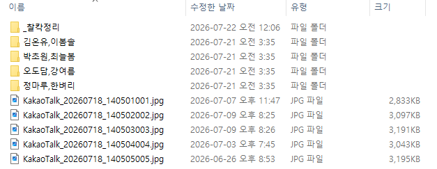
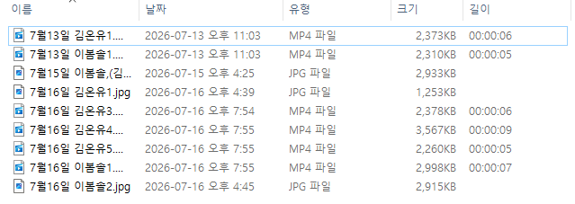

수업 끝나고 쌓인 사진 수백 장, 누가 누구인지 넘겨 보며 밤늦게 정리해 본 적 있으신가요?
찰칵정리는 광주 토리태권도 관장이 그 고생을 없애려고 직접 개발한 프로그램입니다.
사진을 폴더에 넣으면 얼굴인식이 아이를 알아보고 아이별 폴더에 자동 정리합니다.
주요 기능
- 수백 장 사진·동영상을 얼굴인식으로 아이별 폴더에 자동 분류
- 주차 폴더 정리 + 파일명에 날짜·아이 이름 자동 입력
- 확신이 없는 사진은 "보류"로 분리, 클릭 몇 번으로 교정 (교정할수록 똑똑해짐)
- 학부모 전송용 아이별 ZIP 만들기 + 전송 완료 체크 (빠뜨림 방지)
- 몇 달치를 한 번에 전송 — 주차별로 흩어진 사진을 한 폴더에 모아, 폴더를 하나씩 열지 않고 카카오톡에 끌어다 놓기
- 도장 로고 워터마크, 주차·월별 통계 (사진 못 받은 아이 자동 표시)
지원 환경: Windows 10/11 · 설치하면 14일(2주) 동안 모든 기능을 제한 없이 사용할 수 있습니다. 신청이나 코드 없이 자동으로 시작됩니다.
이렇게 사용해요

1. 사진을 넣고 [분류 시작] — 얼굴인식이 아이별로 자동 분류합니다. 결과를 카드로 확인하고, 틀린 건 클릭 몇 번으로 교정하면 다음부터 더 똑똑해집니다.

2. 학부모에게 전송 — 아이별로 사진을 묶어 카카오톡으로 보냅니다. 보낸 아이는 자동 체크되어 빠뜨리는 일이 없습니다.

3. 한눈에 확인 — 주차별로 아이마다 몇 장을 받았는지 표시하고, 사진이 없는 아이는 빨간색으로 알려줘 미리 챙길 수 있습니다.
정리하면 내 컴퓨터 폴더가 이렇게 됩니다.

아이 이름으로 폴더가 만들어지고 사진이 그 안으로 들어갑니다.
아래처럼 KakaoTalk_20260718_140501001.jpg 같은 파일이 쌓여 있어도 그대로 두시면 됩니다.

파일 이름도 7월16일 김온유3 처럼 날짜와 이름으로 바뀌어,
나중에 찾을 때 폴더를 열어보지 않아도 됩니다.
※ 화면 속 사진은 개인정보 보호를 위해 얼굴을 흐리게 처리했습니다.
폴더·파일 이름 예시에 쓰인 아이 이름은 실제 원생이 아닌 가상의 이름입니다.
프로그램 설명
이 프로그램이 할 수 있는 일을 갈래별로 모두 적었습니다.
사진 분류
- 사진과 동영상을 얼굴인식으로 아이별 폴더에 나눕니다
- 교정할 때마다 자동으로 다시 학습합니다. 쓸수록 정확해집니다
- 인식 민감도를 조절합니다 — 과감하게(보류가 적은 대신 가끔 틀림) ↔ 신중하게(틀리지 않는 대신 보류가 늘어남)
- 확신이 없는 사진은 보류로 따로 빠집니다. 엉뚱한 폴더에 섞이지 않습니다
- 여러 아이가 같이 나온 사진은 모든 아이의 폴더에 들어갑니다
- 형제·남매는 쉼표로 이름을 적어(이도훈,이도형) 한 폴더에서 같이 관리합니다
- 이미 정리한 사진을 또 받아도 중복을 알아채고 휴지통으로 보냅니다
정리 방식
- 주차별(도장·학원)과 일별(어린이집·유치원) 중에 골라 씁니다
- 파일 이름에 날짜와 아이 이름을 자동으로 붙입니다
- 학습용 사진은 파일 이름을 바꾸지 않아도 됩니다. 아이 폴더에 넣기만 하면 인식합니다
- 정리 되돌리기 — 분류 기록을 골라 원래 자리로 되돌립니다
학부모 전송
- 아이별 ZIP 만들기와 전체 일괄 ZIP
- 보낸 아이는 자동 체크되고, 아직 안 보낸 아이만 걸러 볼 수 있습니다
- 알림장 보내기 도우미 — 안 보낸 아이 순서대로 폴더를 열어주고, 보냄 표시를 대신 기록합니다
- ZIP을 만들 때 사진에 도장 로고 워터마크를 넣습니다
키즈노트·아이엠스쿨 같은 알림장 앱으로 자동 업로드되는 기능은 없습니다. 계정이 막힐 수 있어 일부러 만들지 않았습니다. 폴더와 ZIP까지 만들어 드리고, 올리는 것은 직접 하셔야 합니다.
기록과 관리
- 주차별 통계 — 아이마다 사진·동영상이 몇 장인지 세고, 0장인 아이는 빨간색으로 알려줍니다
- 통계를 CSV 리포트로 저장합니다
- 백업과 복원 — 얼굴DB와 설정을 ZIP으로 묶습니다. 7일마다 자동 백업하고 최근 4개를 남깁니다
- 작업 폴더에 새 사진이 들어오면 알려줍니다
- 새 버전이 나오면 프로그램이 알려주고 받아 줍니다
안전
- 모든 처리가 이 컴퓨터 안에서만 이루어집니다. 클라우드 업로드도 외부 서버 전송도 없습니다
- 인터넷이 끊겨 있어도 그대로 작동합니다
- 얼굴인식 파일이 프로그램 안에 들어 있어, 처음 쓸 때 내려받는 과정이 없습니다
어린이집·유치원에서도 씁니다
등원하는 아이들 사진을 찍고 그날 알림장에 아이별로 올리는 일은, 선생님 하루에서 적지 않은 시간을 잡아먹습니다.
수십 장 중에서 이 아이만 골라내고, 이름별로 정리하고, 다시 올리고 — 이걸 매일 반복하는 건 생각보다 고된 일입니다.
찰칵정리는 그 골라내는 일을 대신합니다.
아이 사진은 원 밖으로 한 장도 나가지 않습니다.
원장님들이 가장 먼저 물으시는 게 이겁니다. 찰칵정리는 모든 처리가 원내 PC 안에서만 이루어집니다.
클라우드 업로드도, 외부 서버 전송도 없습니다. 인터넷이 끊겨 있어도 그대로 작동합니다.
- 매일 쌓이는 아이별 사진 정리에 시간을 너무 많이 쓰고 있다
- 아이 사진을 외부 서비스에 올리는 게 마음에 걸린다
- 유독 사진이 적은 아이가 있어 늘 신경 쓰인다 (통계에서 빨간색으로 알려드립니다)
- 원아 수가 많아 손으로 정리하는 게 한계다
- 선생님마다 사진 정리 방식이 달라 통일이 안 된다
※ 키즈노트·아이엠스쿨 같은 알림장 앱으로 자동 전송되는 기능은 없습니다.
아이별 폴더와 ZIP까지 만들어 드리고, 앱에 올리는 것은 선생님이 직접 하셔야 합니다. 이 점은 미리 분명히 말씀드립니다.
※ 설치 후 14일(2주) 동안 아이 수·사진 수 제한 없이 전 기능을 무료로 사용하실 수 있습니다. 신청이나 코드 없이 자동으로 시작됩니다.
이용 요금
| 구독 기간 | 정가 | 출시 기념 이벤트가 |
|---|
| 14일 무료 체험 | 무료 (설치 후 자동 시작 — 신청·코드 불필요) |
| 1개월 | 20,000원 | 15,000원 (25%) |
| 3개월 | 60,000원 | 45,000원 (25%) |
| 6개월 | 120,000원 | 84,000원 (30%) |
| 12개월 | 240,000원 | 156,000원 (35%) |
구독 신청·결제 안내는 카카오톡 채널 "찰칵정리" 1:1 채팅으로 문의해 주세요. 라이선스 코드는 입금 확인 후 즉시 발급됩니다.
구독하는 방법
14일 무료 체험 — 설치하면 자동으로 시작됩니다
- 위 버튼으로 프로그램을 다운로드하고 설치하세요.
- 처음 켠 날부터 14일(2주) 동안 모든 기능이 제한 없이 열립니다. 신청이나 코드 없이 자동으로 시작됩니다.
- 남은 기간은 창 위쪽에 "무료 체험 D-11 (8월 11일까지)" 형태로 표시됩니다.
- 2주가 끝나면 '분류'만 멈춥니다. 이미 정리된 사진은 그대로 있고, 폴더 열기·학부모 전송·통계·백업은 계속 사용하실 수 있습니다.
더 써보고 싶으신 경우에는 카카오톡 채널로 말씀해 주세요. 기간을 연장해 드릴 수 있습니다.
정식 구독
- 프로그램 위쪽 [라이선스 등록] 창을 열고, [💬 카카오톡으로 문의] 버튼을 누르면 채팅창이 열립니다. 원하시는 기간을 알려주세요.
- 입금 계좌를 안내해 드리고, 확인되면 구독 코드를 보내드립니다.
- 받은 코드를 [라이선스 등록]에 붙여넣으면 정식판으로 전환됩니다. 기기번호는 보내지 않으셔도 됩니다.
코드는 받으신 뒤 2시간 안에 등록해 주세요. 시간이 지나면 코드가 잠깁니다. 잠겼더라도 채널로 말씀만 주시면 바로 새 코드를 보내드리니 걱정하지 않으셔도 됩니다.
코드는 먼저 등록한 컴퓨터 한 대에만 들어갑니다(코드 공유 방지). 컴퓨터를 바꾸시면 채널로 알려주세요, 남은 기간 그대로 옮겨 드립니다.
등록하실 때만 잠깐 인터넷이 필요합니다. 도장 PC가 인터넷에 연결되지 않는 경우에는 [라이선스 등록] 창의 기기번호를 보내주시면, 인터넷 없이 등록되는 코드를 따로 보내드립니다.
갱신하실 때는 새 코드만 등록하시면 되고, 그동안 등록하신 아이와 학습된 내용은 그대로 유지됩니다.
자주 묻는 질문
- 어떻게 설치하나요?
- 다운로드한 zip 파일에서 마우스 오른쪽 클릭 → [압축 풀기] → 안에 있는 ChalkakSetup을 더블클릭하면 설치됩니다. 같은 폴더의 "1. 먼저 읽어주세요"에 그림 없이도 따라 할 수 있게 순서가 적혀 있어요.
- 설치할 때 파란 경고창이 떠요. ("Windows의 PC 보호")
- 바이러스가 아닙니다. 인터넷에서 받은 프로그램을 처음 실행할 때 Windows가 한 번 더 확인하는 창입니다. [추가 정보] → [실행]을 누르시면 설치됩니다.
정말 저희가 만든 파일이 맞는지 이렇게 확인하실 수 있습니다.
· 만든 곳 — 토리태권도 (사업자등록번호 740-93-02035, 광주광역시 서구 금호동)
· 받는 곳 — github.com/chalkak-soft 저희 공식 저장소입니다. 다른 곳에서 받으신 파일은 저희 것이 아닙니다.
· 그래도 미덥지 않으시면 받으신 파일을 virustotal.com 에 올려 검사해 보세요. 무료입니다.
확인이 어려우시면 카카오톡 채널로 말씀 주세요. 같이 봐 드리겠습니다.
- 사진을 매주 보내지 않고 몇 달 모았다가 보내는데 괜찮나요?
- 네. [학부모 전송] 탭에서 기간을 "전체 기간"으로 고르시면, 그 아이 사진이 주차와 상관없이 한 폴더에 모입니다. 폴더를 하나씩 열지 않고 Ctrl+A로 전부 선택해 카카오톡에 끌어다 놓으시면 됩니다.
모아놓은 폴더는 원본을 가리키는 바로가기 모음이라 저장 공간을 더 쓰지 않고, 다 보내신 뒤 지우셔도 원본 사진은 그대로 남습니다.
- 얼굴 인식이 틀리면 어떻게 하나요?
- 틀린 사진을 골라 올바른 아이로 교정하면 됩니다. 교정한 내용이 학습에 반영되어 다음부터 점점 더 정확해집니다. 애매한 사진은 "보류"로 빠지니 안심하세요.
- 사진은 어디에 저장되나요?
- 지정하신 폴더 안에서만 아이별로 정리됩니다. 사진이 외부(인터넷)로 전송되는 일은 전혀 없습니다. 모든 처리는 내 컴퓨터 안에서 이루어집니다.
- 컴퓨터를 잘 몰라도 쓸 수 있나요?
- 네. 사진을 폴더에 넣고 버튼 몇 개만 누르면 됩니다. 설치 시 안내 마법사가 처음 설정을 도와드리고, 사용설명서도 함께 드립니다.
- 아이가 30명이 넘는데 쓸 수 있나요?
- 네. 설치 후 14일(2주) 무료 체험 기간에는 아이 수·사진 수 제한이 없습니다. 실제 규모 그대로 사용해 보신 뒤 결정하시면 됩니다.
- 어린이집·유치원에서도 쓸 수 있나요?
- 네. 태권도장이든 어린이집이든 "아이별로 사진을 나눠야 한다"는 일은 똑같습니다. 다만 키즈노트·아이엠스쿨 같은 알림장 앱으로 자동 전송되는 기능은 없고, 아이별 폴더나 ZIP까지 만들어 드립니다. 앱에 올리는 건 선생님이 직접 하셔야 합니다.
- 먼저 써보고 결정하고 싶어요.
- 설치하면 바로 14일(2주) 무료 체험이 시작됩니다. 신청이나 코드 없이 모든 기능을 제한 없이 사용하실 수 있습니다. 2주가 지나도 이미 정리된 사진은 그대로 있고, 폴더 열기·학부모 전송·통계는 계속 쓰실 수 있습니다.
- '기기번호'가 뭔가요? 꼭 보내야 하나요?
- 보내지 않으셔도 됩니다. 받으신 코드를 [라이선스 등록] 창에 붙여넣기만 하면 됩니다. 기기번호는 도장 PC가 인터넷에 연결되지 않을 때만 쓰는 예비 방법입니다. 그런 경우에는 [라이선스 등록] 창에 자동으로 떠 있는 번호를 [복사]해서 보내주시면, 인터넷 없이 등록되는 코드를 따로 보내드립니다.
- 코드를 2시간 안에 등록하지 못했어요.
- 카카오톡 채널로 말씀만 주시면 바로 새 코드를 보내드립니다. 추가 비용은 없습니다. 코드가 다른 곳으로 새어나가 쓰이는 것을 막으려고 시간 제한을 둔 것이니, 늦으셨다고 걱정하지 않으셔도 됩니다.
- 컴퓨터를 바꾸면 어떻게 하나요?
- 카카오톡 채널로 알려주시면 새 코드를 발급해 드립니다. 남은 기간은 그대로 이어집니다. 추가 비용은 없습니다.
도장이라면 — 폭탄 줄넘기도 무료로 드립니다
폭탄이 매번 랜덤한 시각에 터지는 줄넘기 게임 진행 도구입니다.
언제 터질지 모르니 아이들이 끝까지 뜁니다. 설치도 등록도 없이 받아서 바로 쓰시면 됩니다.
찰칵정리를 쓰지 않으셔도 무료입니다. 그냥 가져가서 수업에 쓰세요.
🪢 폭탄 줄넘기 받으러 가기
도장 로고와 안내 음성에 도장 이름을 넣은 전용판도 만들어 드립니다. 자세한 내용은 위 페이지에 있습니다.